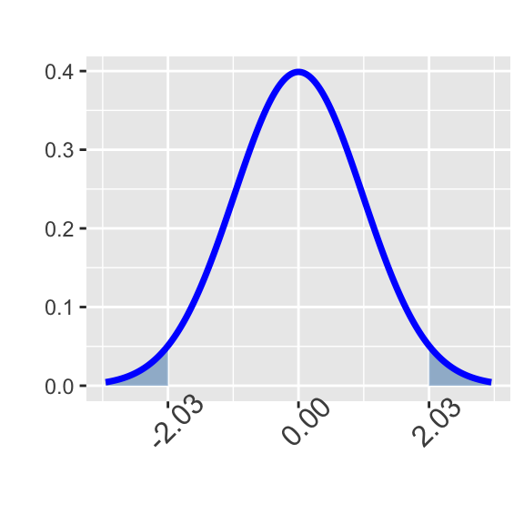

Topic 6: The Normal Distribution
This is the second part of the full Topic 6 notebook. As
a reminder, our main goal is to investigate and work with the normal
distribution. In the first part of the Topic 6 notebook,
you encountered the definition of the normal distribution, the
Empirical Rule for estimation with normally distributed data,
the notion of the \(z\)-score,
calculating probabilities using pnorm(), and calculating
percentiles using qnorm(). In this second part of the
notebook, we get more practice using pnorm() and
qnorm().
Objectives
The following is a reminder of the objectives outlined for the full
Topic 6 notebook.
Workbook Objectives: After completing this workbook you should be able to:
- Compute probabilities of events well-modeled by a normal distribution.
- Given a variable \(X\) which follows an assumed normal distribution, compute and interpret various percentile thresholds for \(X\).
- Identify scenarios to which the normal or binomial distributions can be applied, and use them to answer various probability-related questions.
Computing probability from a normal distribution
Through this section you’ll be getting practice finding probabilities
by using R’s pnorm() function to compute areas. Remember
that the pnorm() function takes three arguments – the first
is a \(\tt{boundary}\) value, the
second is the \(\tt{mean}\) of the
distribution, and the third is the \(\tt{standard~deviation}\). The value
returned by pnorm() is the area to the left of the
provided boundary value in the distribution with the mean and standard
deviation you provided.
For these first few questions I’ll draw pictures for you, but you should be prepared to draw your own shortly.
Question 1: Use the code block below to find \(\mathbb{P}\left[Z < \right.\) 1.49 \(\left.\right]\) – Remember that \(Z\sim N\left(\mu = 0, \sigma = 1\right)\).
#I've drawn the picture for you below.
#(Be sure you can answer: Why does this
#picture correspond to the probability
#requested?)#Use the pnorm() function with the boundary of
#the shaded region as the first argument, the
#mean of the normal distribution as the second
#argument, and the standard deviation of the
#normal distribution as the final argument.
pnorm(___, ___, ___)#The notation Z ~ N(mu = 0, sigma = 1) indicates
#that the mean (mu) of this distribution is 0
#and that the standard deviation (sigma) of the
#distribution is 1.
pnorm(___, ___, ___)pnorm(1.49, 0, 1)Question 2: Find \(\mathbb{P}\left[Z < \right.\) -1.83 \(\left.\right]\).
#Again, I've drawn the picture for you here.
#Would you be able to draw the picture if I
#hadn't provided it?
#Try practicing this picture-drawing skill --
#it will serve you well.#If you haven't solved the question yet, how
#"big" do you expect this probability to be?
#Should it be more than 0.5? Less than 0.5? Why?#Remembering that the entire area under this
#normal distribution is 1, and that the distribution
#is symmetric (the left and right half are identical),
#we should expect our answer to be less than 0.5.
#This is because our shaded area covers less than
#half of the entire distribution.#Answer this question exactly the way you answered
#the previous one. The boundary value here is
#negative, but pnorm() will always give you the
#area to the left of your provided boundary value.
#That's what you want here anyway, right?#Fill in the blanks to find the answer:
pnorm(___, ___, ___)Question 3: Find \(\mathbb{P}\left[Z > \right.\) -2.17 \(\left.\right]\).
#This one is similar to the previous two questions.
#What is different about it, though?#The shaded area is to the right of the
#boundary value.#The pnorm() function gives us the area to the
#*left* of our boundary value, not the area
#to the right of it! Can we still find a way
#to use pnorm()?#In a previous notebook, we started with a probability
#that we knew was too big, and removed the
#probability associated with events we weren't
#interested in so that we were left with the
#probability of only the events we wanted.
#Can we apply those same ideas here?#If we start with the entire area under the normal
#curve and remove the unshaded area, then we
#should be left with just the shaded area.#Fill in the blanks to answer the question:
___ - ___(___, ___, ___)#To fill in the leftmost blank, what is the area
#under the entire normal distribution equal to?
#That is, if we shaded in the entire distribution,
#what probability would that represent?
___ - ___(___, ___, ___)#Shading the entire distribution amounts to
#considering all possible outcomes. The probability
#of observing one of the possible outcomes is 1
#(or 100%).
1 - ___(___, ___, ___)#We know that 1 (or 100%) is too large because we see
#unshaded area. The probability we are looking for is
#less than 100%. How do you subtract out the probability
#of observing an outcome to the left of -2.17?
1 - ___(___, ___, ___)#The distribution we are working with is still
#a normal distribution.
1 - ___(___, ___, ___)#Apply what you've done in the previous
#two questions to identify the area to the left
#of the boundary value -2.17 as what will be subtracted away.
1 - pnorm(___, ___, ___)1 - pnorm(-2.17, 0, 1)Question 4: Find \(\mathbb{P}\left[Z > \right.\) 2.12 \(\left.\right]\).
#Take the same approach as you used to answer
#the previous question.#How "big" should your answer be? More than 0.5?
#Less than 0.5? How do you know?#To compute the probability to the right of
#your boundary value, subtract the probability
#to the left of the boundary value away from 1.#Fill in the blanks
___ - ___(___, ___, ___)Question 5: Find \(\mathbb{P}\left[\right.\) -1.04 \(< Z <\) 2.08 \(\left.\right]\).
#What makes this one different from all of the
#previous questions?#Even our "subtract-from-one" trick won't work
#here, because pnorm() computes the area into the tail
#of the distribution.#Starting with 1 and subtracting out the area
#we don't want won't easily work here.
#
#Remember, we started with 1 and subtracted in the previous
#two questions because we knew that an area of 1 was
#"too big".#Is there a way we could compute an area that
#is too big to start? We want the area we compute
#to share a boundary with the shaded area we are
#ultimately trying to find. See the picture for reference.#Fill in the blanks to compute an area that's too big,
#to start.
___(___, ___, ___)#One of the areas below is the one to start with...
#which one is it, and why?
pnorm(2.08, 0, 1)
pnorm(-1.04, 0, 1)#Starting with pnorm(2.08, 0, 1) gives us an
#area that is bigger than what we want. Take out a
#piece of paper and draw/shade the region corresponding
#to the value of pnorm(2.08, 0, 1)
pnorm(2.08, 0, 1)#From your picture, you should be able to visually
#confirm that the area computed by pnorm(2.08, 0, 1)
#is larger than the area you want to find. You should
#also be able to see that your picture and the
#picture I drew in this notebook share a boundary
#though.
pnorm(2.08, 0, 1)#Can you remove some of the shaded area from your
#picture in order to obtain the shaded area we want?
#Removing shaded area amounts to subtraction.
pnorm(2.08, 0, 1) - ___#Here's a slightly better hint. Fill in the blanks.
pnorm(2.08, 0, 1) - ___(___, ___, ___)#The area you are subtracting still falls under a
#normal distribution with mean 0 and standard deviation 1.
pnorm(2.08, 0, 1) - pnorm(___, 0, 1)#What is the boundary value corresponding to the
#region you'd like to "unshade" from your picture
#in order to obtain the picture in this notebook?
pnorm(2.08, 0, 1) - pnorm(___, 0, 1)pnorm(2.08, 0, 1) - pnorm(-1.04, 0, 1)Question 6: Find \(\mathbb{P}\left[Z < \right.\) -1 \(\text{ or } Z >\) 1.7 \(\left.\right]\).
#Again, something slightly different. How is this one
#different than the questions you've previously been
#asked? How is it similar to those questions?#There are lots of way's to approach this one.
#My favorite is to compute the two areas separately
#and then add them together.#Calculate the area to the left of the left-most
#boundary value.#Calculate the area to the right of the right-most
#boundary value.#You'll need your "subtract-from-one" trick here.#Now that you have both areas, add them together
#to find the total shaded area.Question 7: Find \(\mathbb{P}\left[\left|Z\right| > \right.\) 2.03 \(\left.\right]\).
#Justifying the picture:
#Recall that |Z| denotes the "absolute value" of Z.
#The absolute value measures distance away from 0.
#Notice here, that we are interested in values of Z
#whose distance from 0 exceeds 2.03.#You can answer this question in the same way as you
#did for the previous question.
#Use the picture to guide you.#It is even a little bit easier than that question if
#you remember that our distribution is symmetric.#What must be true about the area in the left tail
#and the area in the right tail?#Since they're the same, just calculate one of the areas
#and double it.
Through the last seven problems you only worked with the standard
normal distribution – that’s the \(Z\)-distribution, which is \(N\left(\mu = 0, \sigma = 1\right)\). We can
find probabilities from arbitrary normal distributions (normal
distributions with any mean and any standard deviation) using R’s
pnorm() functionality – just supply the appropriate
mean and sd arguments to pnorm()
instead of the 0 and 1 that we passed earlier.
Finding percentile cutoffs on a normal distribution
Recall from earlier that the \(p^{th}\) percentile of a random variable \(X\) is the value \(x^*\) such that \(\mathbb{P}\left[X < x^*\right] = p\).
If \(X\sim N\left(\mu,
\sigma\right)\), then to find the cutoff \(x^*\) for which \(\mathbb{P}\left[X < x^*\right] = p\), we
can use R’s qnorm() function. Similar to
pnorm(), this function takes three arguments. The first is
the \(\tt{area~to~the~\underline{LEFT}}\) of the
desired cutoff, the second is the \(\tt{mean}\) of the distribution, and the
third is the \(\tt{standard~deviation}\) of the
distribution.
Recall from earlier that SAT scores followed \(N\left(\mu = 1068, \sigma = 210\right)\) and ACT scores followed \(N\left(\mu = 20.8, \sigma = 5.8\right)\). The code block below is set up to find the minimum required SAT score to fall in the 95th percentile (to do better than 95% of other test-takers). Execute the code and note the required score. Adapt the code to find the minimum ACT score required to fall into the top 10% of all ACT test takers. Does your answer seem right? How can you judge?
qnorm(0.95, 1068, 210)#As mentioned, the arguments to the qnorm() function
#are, in order:
####area to the LEFT of the desired cutoff (boundary)
####the mean of the normal distribution
####the standard deviation of the normal distribution
qnorm(0.95, 1068, 210)#Fill in the blanks in the second call to qnorm() to
#reflect the ACT exam.
qnorm(0.95, 1068, 210)
qnorm(___, ___, ___)#Fill in the blanks in the second call to qnorm() to
#reflect the ACT exam.
qnorm(0.95, 1068, 210)
qnorm(___, 20.8, 5.8)#The first argument is the area to the LEFT (the percentile)
#of the desired cutoff score. What should this
#area be if we want the *top* 10% of all scores?
qnorm(0.95, 1068, 210)
qnorm(___, 20.8, 5.8)qnorm(0.95, 1068, 210)
qnorm(0.9, 20.8, 5.8)Submit
Continuing On…
Once you close this notebook, launch the
Topic 6c: The Normal Distribution notebook to finish
working through the content from the full Topic 6
notebook.
Partial Summary: In this notebook you’ve gotten practice with the items below.
Using
pnorm()to compute probabilities associated with a variety of observed outcomes for a normally distributed random variable.- Remember that \(\tt{pnorm()}\) always returns the area to the left of the boundary value \(k\).
- Hopefully you’ve identified the importance of drawing a picture as a step in your strategy for finding probabilities.
Using
qnorm()to identify desired percentiles (cut-off values or boundaries) on a normal distribution.- Remember that \(p\) (the first
argument to
qnorm()) must be the area to the left of the desired cutoff value.
- Remember that \(p\) (the first
argument to